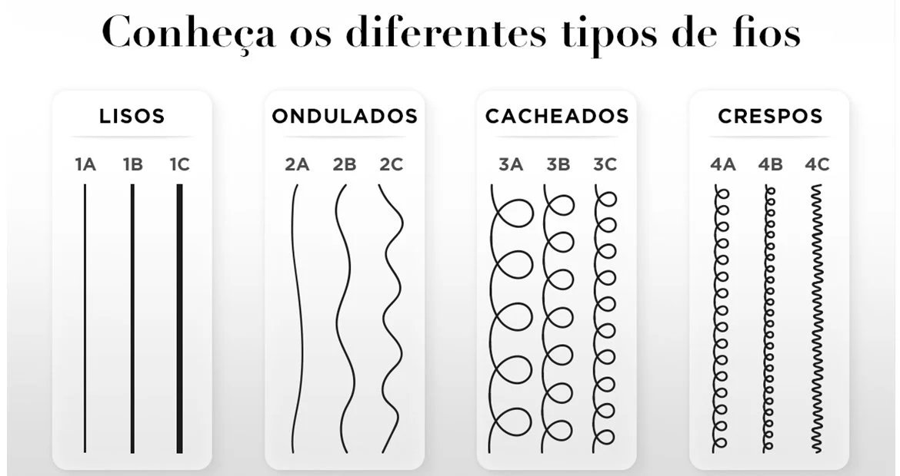

Você sabia que existem diferentes tipos de cachos?
Os cabelos são divididos em classificações de lisos, ondulados, cacheados e crespos.
Saber a característica de cada fio é essencial para entender as necessidades naturais dos fios e encontrar
os melhores tipos de cuidado para o seu tipo de cabelo, e de cacho.
Quais são os tipos de cabelo cacheados?
Os tipos de cabelos são nomeados com letras e números. O cabelo 1 representa os cabelos lisos, o 2
representa os tipos de cabelo ondulado, o 3 os tipos de cabelo cacheado e o 4 os tipos de cabelos crespos.
Além disso, as letras A, B e C apresentam a intensidade da curvatura do fio, sendo o A os mais abertos e o C
os mais fechados, portanto um cabelo cacheado 3A tem os cachos mais abertos do que um cabelo cacheado 3B.
Hoje vamos falar com mais detalhes sobre os cabelos cacheados e crespos para você entender a diferença entre
cada um.
Mas lembre-se, nosso cabelo se modifica conforme os cuidados, os processos químicos e os produtos
utilizados,
então é comum uma pessoa ter mais de um tipo de cabelo, por isso identificar as diferenças dos seus fios vai
te ajudar a oferecer os melhores cuidados para eles.

Cabelos cacheados
Os tipos de cabelos cacheados são identificados pela numeração 3 junto com as letras A, B e C. Identificar
os tipos de cachos vai te ajudar a entender quais são os melhores tipos de tratamento para os seus fios e
como cuidar deles. Confira mais detalhes sobre cada tipo de cachos:
3A: esse tipo de cabelo cacheado tem um caracol mais solto, mais semelhante com o cabelo ondulado.
3B: esse tipo de cabelo cacheado tem uma curvatura mais definida e consequentemente com um fator
encolhimento maior que o 3A e os cabelos ondulados.
3C: esse tipo de cabelo cacheado apresenta o cacho mais fechado e definido, com isso o fator
encolhimento é
maior. Esse tipo de cacho encontra mais facilidade de definição por ser naturalmente mais definido que os
outros tipos de cachos.
O fator encolhimento é o encolhimento do cabelo ocasionado pela definição dos cachos, quanto mais fechado
for o cacho maior será o fator encolhimento. Ou seja, o fio esticado chega em um determinado lugar e ele
definido encolhe para a formação dos cachos. Os cabelos cacheados tendem a ter mais frizz e ressecamento,
por conta da curvatura. Por isso, passos de hidratação e umectação são necessários para ajudar no controle
dessas condições.
Cabelos crespos
Os cabelos crespos apresentam fios mais fechados que os cabelos cacheados, com isso o fator encolhimento
desse tipo de cabelo tende a ser maior. Além disso, os cabelos crespos, assim como os cacheados, também
tendem a ser mais ressecados por conta da curvatura dos fios. Por isso, tratamentos de hidratação e
umectação também são benéficos para esse tipo de fio. Os cabelos crespos são reconhecidos pela numeração 4,
com isso, abaixo vamos caracterizar cada tipo de cabelo crespo.
4A: o tipo de cabelo crespo é semelhante ao cabelo cacheado 3C só que mais grosso. Quando esticado, ele tem
uma definição semelhante ao “S”. Além disso, todos os cabelos crespos são reconhecidos por ter bastante
volume.
4B: esse tipo de cabelo crespo tem como característica o formato em “Z”, que lembra um zigue-zague o que faz
com que os fios tenham mais definição e isso faz com que os fios sejam mais densos.
4C: esse tipo de cabelo é crespíssimo o que faz com que ele seja o mais volumoso de todos os tipos de
cachos. Por essa característica, a constância de tratamentos de hidratação e umectação ajudam a controlar o
frizz e na definição desse tipo de cabelo.